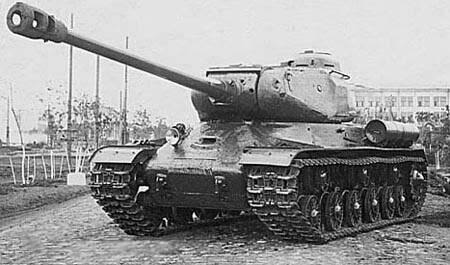

IS-2
Giới thiệu
IS-2 là xe tăng hạng nặng của Liên Xô được thiết kế để đột phá phòng tuyến và đối đầu với xe tăng hạng nặng Đức.
Pháo 122 mm D-25T có sức công phá lớn, đặc biệt hiệu quả trước công sự, tòa nhà và mục tiêu bọc thép.
Lịch sử phát triển
IS-2 được phát triển từ dòng KV và IS-1, đưa vào sản xuất từ cuối năm 1943. Phiên bản thân trước cải tiến năm 1944 tăng khả năng bảo vệ.
Xe thường được biên chế cho các trung đoàn xe tăng hạng nặng cận vệ, hỗ trợ những mũi tiến công chủ lực của Hồng quân trong giai đoạn cuối chiến tranh.
Thông số kỹ thuật
| Quốc gia | Liên Xô |
|---|---|
| Phân loại | Xe tăng hạng nặng |
| Thời gian phục vụ | 1944–1945 trong Thế chiến II |
| Kíp lái | 4 người |
| Khối lượng | Khoảng 46 tấn |
| Động cơ | Diesel V-2-IS V12 |
| Công suất | Khoảng 520 mã lực |
| Tốc độ tối đa | Khoảng 37 km/h |
| Tầm hoạt động | Khoảng 150–240 km |
| Giáp | Khoảng 30–120 mm |
Vũ khí
- Pháo chính 122 mm D-25T.
- Một súng máy đồng trục DT 7,62 mm.
- Một súng máy thân xe DT 7,62 mm và thường có DShK 12,7 mm trên nóc.
Ưu điểm
- Đạn 122 mm có sức công phá rất lớn.
- Giáp trước mạnh, đặc biệt trên phiên bản thân trước cải tiến.
- Khối lượng thấp hơn Tiger II nhưng vẫn có hỏa lực hạng nặng.
Nhược điểm
- Tốc độ bắn chậm do dùng đạn rời liều.
- Cơ số đạn pháo hạn chế.
- Không gian bên trong tương đối chật và tầm quan sát còn hạn chế.
Các trận đánh và chiến dịch tiêu biểu
Chiến dịch Bagration
IS-2 hỗ trợ các đơn vị đột phá phòng tuyến Đức trong mùa hè năm 1944.
Hungary và Đông Phổ
Các trung đoàn IS-2 tham gia nhiều trận đánh chống thiết giáp và công sự kiên cố.
Trận Berlin
IS-2 được dùng để phá hủy chướng ngại, công sự và hỗ trợ bộ binh trong chiến đấu đô thị.
Đánh giá tổng quan
IS-2 là xe tăng đột phá hiệu quả, kết hợp giáp mạnh với hỏa lực công phá lớn.
Nó không tối ưu cho đấu tăng tốc độ cao, nhưng đặc biệt phù hợp với nhiệm vụ phá phòng tuyến và hỗ trợ tiến công.